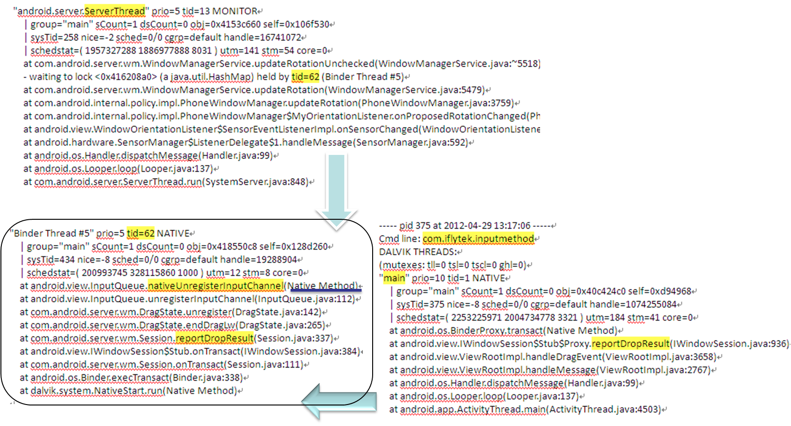

1. 案例1 ICS 版本输入法界面拖动死机.
1.1 现象
–.进入输入法编辑界面；
–.输入文字，选中输入的文字内容；3.长按发出振动并拖动文字到输入法任意位置滑动，然后出现死机现象，需要拔电池才能重启手机。（讯飞输入法和谷歌输入法都高概率出现)
1.2 现象初步分析
–从/data/anr 中可看到full trace 信息，说明是system server watchdog 卡住
–按power key 可开启－关闭屏幕，说明kernel 实际正常，并且WindowManagerPolicy-SurfaceFlinger 正常
–尝试连接adb，可正常连接。
1.3 Java Trace 分析
- Watchdog 最为关心的就是system server 的ServerThread.
- 阅读ServerThread 是否被卡住，然后根据依赖关系抓出凶手。
- 如果ServerThread 正常，再阅读WindowManager, WindowManagerPolicy, ActivityManager, PowerManager 等关键thread 是否运行正常。
参考下图:

1.4 Native Trace 分析
- 当追查Java backtrace 进入Native code 时，就需要native trace 分析。
- Java Trace 和 Native Trace 的结合部位，关键在于Java Trace 上的sysTid, 两者的sysTid 是标准的linux tid. 而Java Trace 上的tid=xxx, 是在DVM 中分配的tid, 在Native Trace 中不在存在。
- 当然您也可以根据两者方法的调用关系来追查，不过如果对该领域不熟悉时，可能产生错误的匹配。
参考下图:
- 结合代码来猜测卡住哪里，死循环while, for…； lock mutex….. 或者加LOG 确认.
- 一般稍微标准的代码，lock, mutex 之类不会随意使用。可review 代码， 然后加上当前的trace 分析。查看trace 中是否有拿着lock 在干其他事情的thread, 抓出来, 如下图:
前一页对应的source code. android_view_InputQueue.cpp, 如下图:
1.5 Input领域分析
- 通过一路的trace 分析，此时我们已经知道ServerThread 最终卡在哪里了。即因为lock 的依赖关系卡在了WindowManager 的event consume 中。因为sem_wait 涉及到semaphore 的处理，从trace 中将比较难以分析。
- 再次阅读LOG，是否可以从LOG 发现更加有价值的线索。打开相应领域的LOG 开关，获取更多的信息, 对于重点地方加入相关LOG，厘清流程, 把异常流程和正常流程比较，寻找关键点。
如下图:
- 关键LOG 对比分析,如下图:
- 从LOG 对比来看，中途插入了一个event 的reset 动作，这个动作会使得message 中的semaphore 被清零，从而导致sem_wait 一直被卡住。
如下图：

- 值得说明的是，在我们PC 上进行sem_destroy 测试，并不会使得sem_wait 卡住，而在android 会附带有清零的动作。
- 为什么有这种情况发生。既然已经请求unregister input channel, 为何此时还会有event 发生呢。Window / Input Manager 的逻辑控制上还有同步问题，应当是迟发了一个event.
- Input 中代码兼容性问题，既然您把sem 都已经destory 了，也把event message 给destory 了，就意味者这个event 已经不能够再被consume 了。更多的逻辑分析这里不再一一深入撰写了，有兴趣者可以研读代码。
1.6 问题解法
- 修正Window / input Manager 的同步问题，改动比较大，有一定的风险性。
- 提高InputTransport 中的兼容性，简单易操作，不会有side-effect.
修改方法如下图: